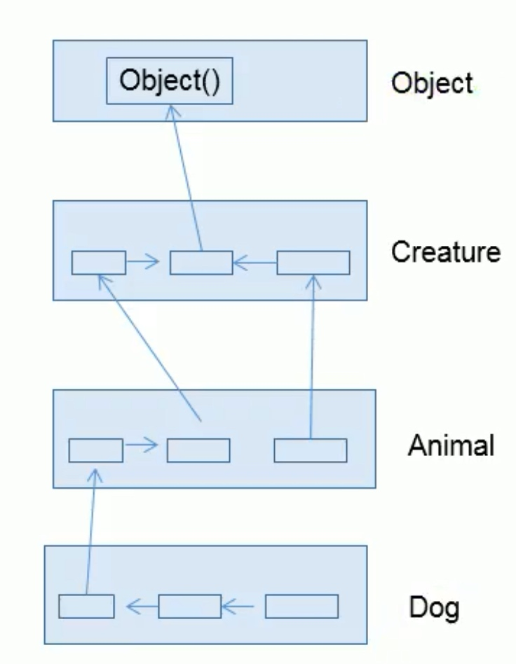

概述
class A extends B { }
- 子类可以获得父类中有私有的属性或方法，但由于封装性的设计，不可以直接调用
- 子类是对父类功能的 “扩展”，不是父类的子集
- Java 一个类只能继承一个父类, 但可以有多个子类 （单继承 多实现）
- 好处
- 减少代码冗余, 提高复用性
- 便于功能扩展
- 为多态提供了前提
Object
所有的类都直接或间接的继承 java.lang.Object 类
重写 (override/overwrite)
在继承的基础之上，子类在获取了父类的结构以后，可以对父类中同名的方法 ( 非 private )进行 “重构”
- 方法名，形参列表形同
- 方法的返回值需要是父类返回值类或父类返回值类子类
- 权限修饰符不小于父类；异常类型不大于父类
- 两个方法要同为
static或同为非static
子类实例化过程
- 从结果上来看，子类继承父类以后，就获取了父类的属性方法，创建子类的对象，的堆空间中，就会加载所有父类声明的属性。
- 从过程来看，当我们通过子类的构造器创建对象的时候，我们一定会直接或间接的调用父类的构造器，进而调用父类的父类的构造器，知道调用了
Object的空参构造器为止。正因为加载过所有父类的结构，所以才可以在内存中看到父类的结构，子类对象才可以调用。 - 虽然创建子类对象时调用了父类构造器，但是自始至终只创建了一个对象，即子类对象
